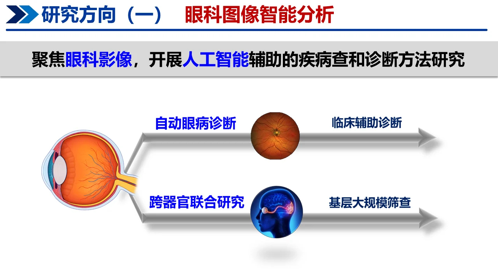
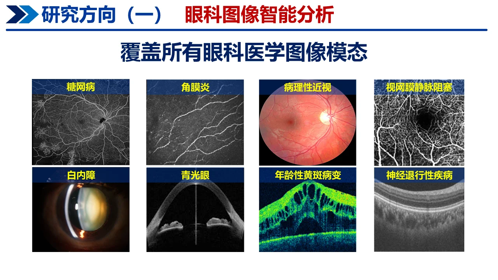
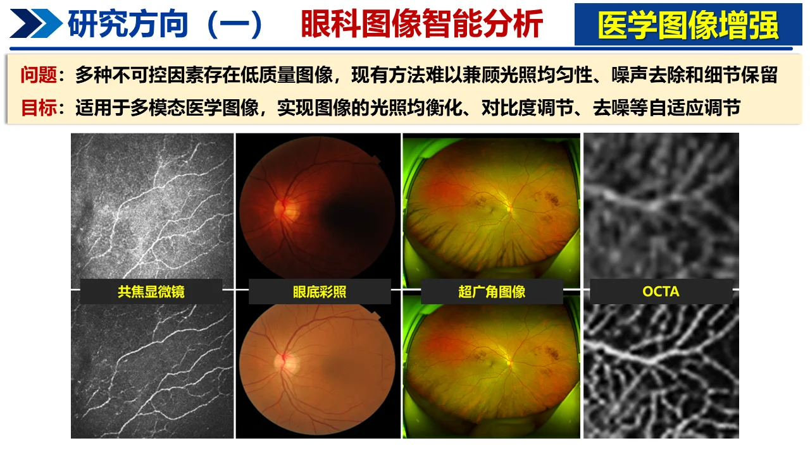
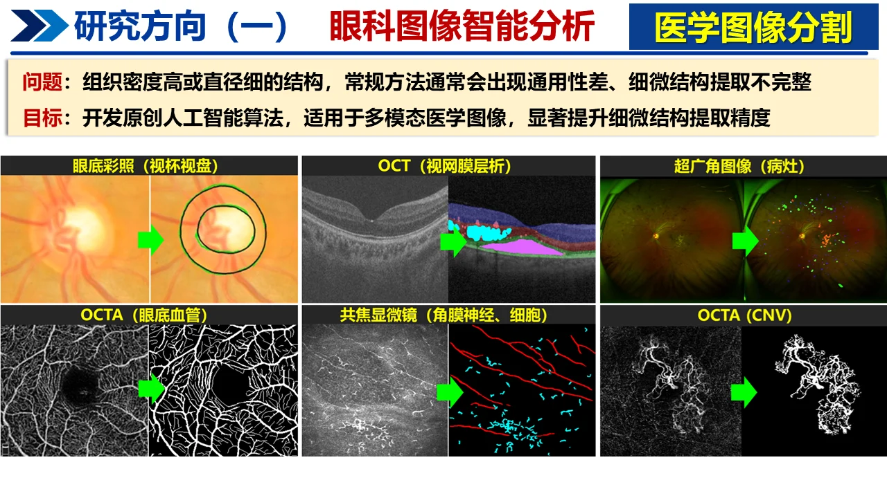
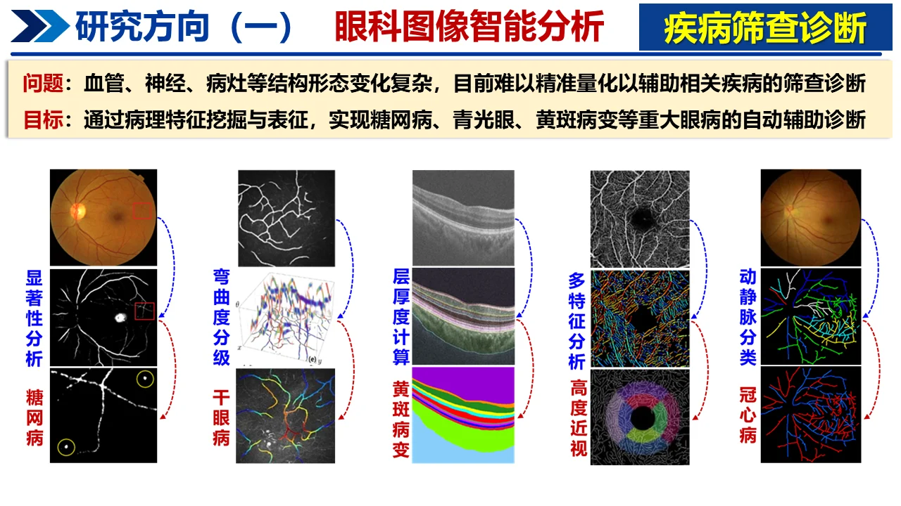
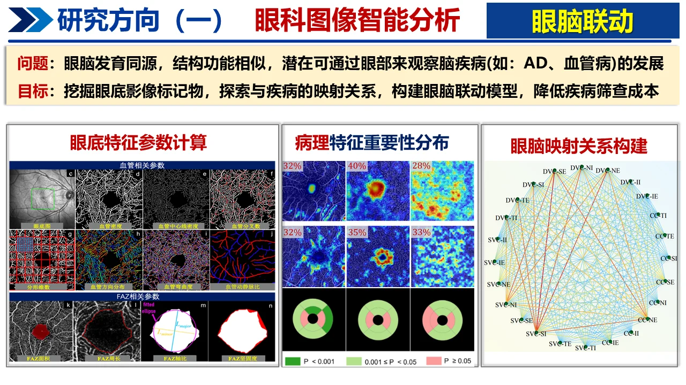
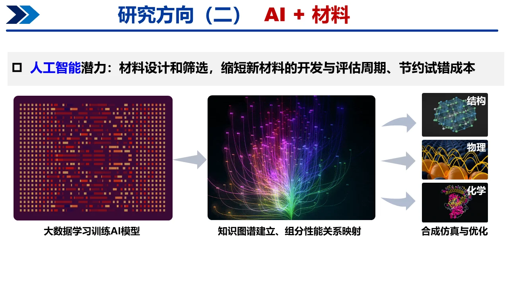
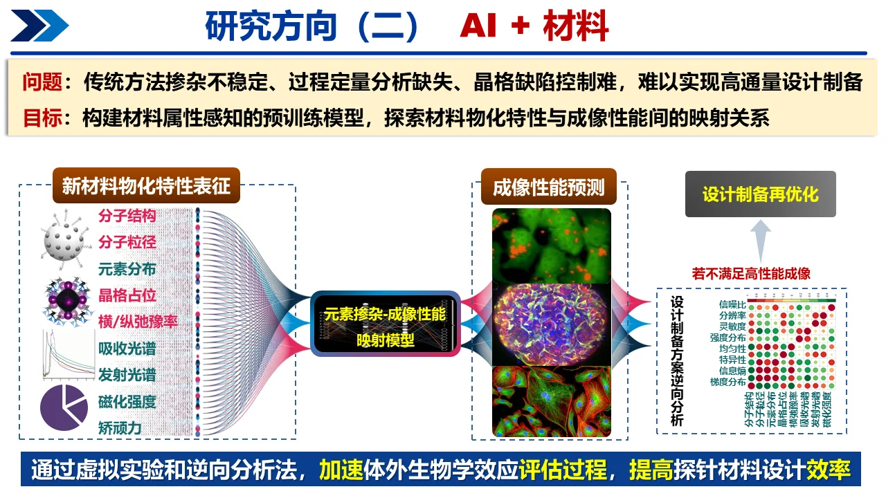
- Biomedical Image Analysis
- Computer-Aided Screening and Diagnosis of Ocluar Diseases
- Eye-Brain Joint Computing
- Surgical Navigation and Robots
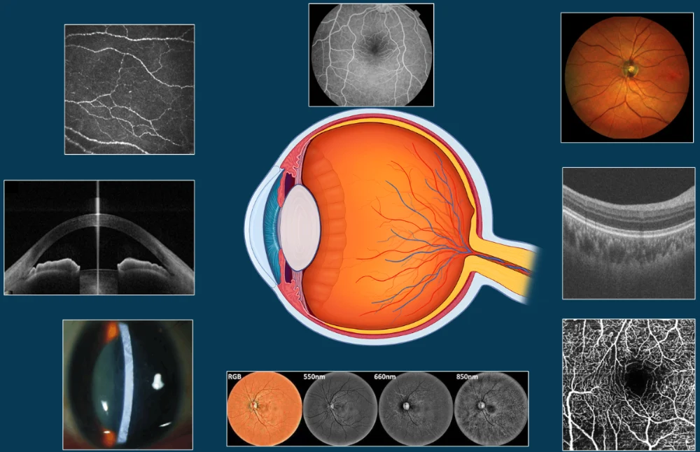
-
Topology Estimation
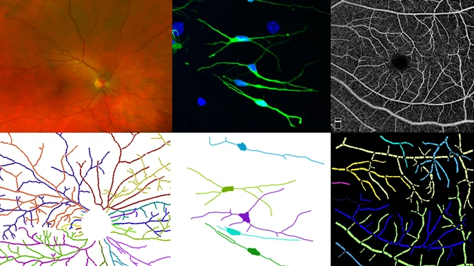
The reconstruction and analysis of tree-like topological structures in the biomedical images is crucial for biologists and clinicians to understand biomedical conditions, disease diagnoisis, treatment, and plan surgical procedures. The underlying tree-structure topology reveals how different curvilinear components are anatomi cally connected to each other.
-
Jianyang Xie, Yitian Zhao, Yonghuai Liu, Pan Su, Yalin Zheng, Yifan Zhao, Jun Cheng, Jiang Liu, Topology Reconstruction of Tree-like Structure in Images via Structural Similarity Measure and Dominant Set Clustering, CVPR, Long Beach, USA, June, pp. 8505-8513, 2019.
-
Yitian Zhao, Jianyang Xie, Yalin Zheng, Yonghuai Liu, Pan Su, Yifan Zhao, Jun Cheng, Jiang Liu, Retinal Artery and Vein Classification via Dominant Sets Clustering-based Vascular Topology Estimation, Proceedings of MICCAI, pp. 56-64, Granada, Spain, September, 2018. [Dataset: VETO]
-
Jianyang Xie, Yitian Zhao, Yalin Zheng, Jiang Liu, Yongtian Wang, Retinal Vascular Topology Estimation Via Dominant Sets Clustering. Proceedings of International Symposium on Biomedical Imaging (ISBI 2018), Washington DC, USA, April, 2018.
-
Artery/Vein Classification
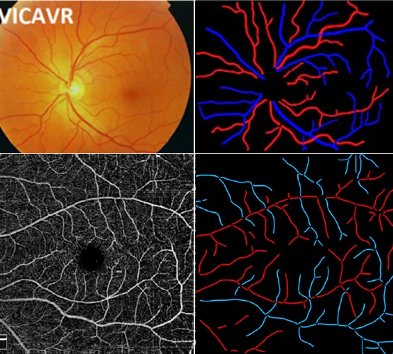
-
Yitian Zhao, Jianyang Xie, Huaizhong Zhang, Yalin Zheng, Yifan Zhao, Hong Qi, Yangchun Zhao, Pan Su, Jiang Liu and Yonghuai Liu. Retinal Vascular Network Topology Reconstruction and Artery/Vein Classification via Dominant Set Clustering, IEEE Transactions on Medical Imaging, 2020, 39(2): 341-356. [Dataset: VETO]
-
Jianyang Xie, Yonghuai Liu, Yalin Zheng, Pan Su, Yan Hu, Jianlong Yang, Jiang Liu, Yitian Zhao, Classification of Retinal Vessels into Artery-Vein in OCT Angiography Guided by Fundus Images, Proceeding of MICCAI, 2020, pp.117-127. [Dataset: ACRO]
-
Vessel/Nerve Segmentation
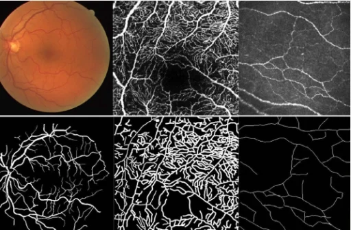
Automated detection of curvilinear structures, e.g., blood vessels or nerve fibres, from medical and biomedical images is a crucial early step in automatic image interpretation associated to the manage- ment of many diseases. Precise measurement of the morphological changes of these curvilinear organ structures informs clinicians for understanding the mechanism, diagnosis, and treatment of e.g. cardio- vascular, kidney, eye, lung, and neurological conditions.
-
Yuhui Ma, Huaying Hao, Jianyang Xie, Huazhu Fu, Jiong Zhang, Jianlong Yang, Zhen Wang, Jiang Liu, Yalin Zheng, Yitian Zhao, ROSE: A Retinal OCT-Angiography Vessel Segmentation Dataset and New Model, IEEE Transactions on Medical Imaging, in press, 2020. [Dataset: ROSE][PDF] [Code]
-
Lei Mou, Yitian Zhao, Huazhu Fu, Yonghuai Liu, Jun Cheng, Yalin Zheng, Pan Su, Jianlong Yang, Li Chen, Alejandro Frangi, Masahiro Akiba, Jiang Liu, CS2-Net: Deep Learning Segmentation of Curvilinear Structures in Medical Imaging, Medical Image Analysis, 2020, 67: 101874. [PDF][Code]
-
Lei Mou, Li Chen, Jun Cheng, Zaiwang Gu, Yitian Zhao, Jiang Liu, Dense Dilated Network with Probability Regularized Walk for Vessel Detection, IEEE Transcation on Medical Imaging, 39(5): 1392-1403, 2020.
-
Lei Mou, Yitian Zhao, Li Chen, Jun Cheng,Hong Qi, Yalin Zheng, Alejandro Frangi, Jiang Liu, CS-Net: Channel and Spatial Attention Network for Curvilinear Structure Segmentation, Proceeding of MICCAI 2019, pp. 721-730. [Dataset: CORN-1] [Code]
-
Medical Image Enhancement
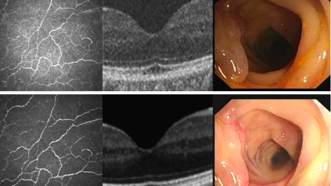
The non-uniform illumination or imbalanced intensity in medical images brings challenges for automated screening, examination and diagnosis of diseases. CycleGAN was proposed to transform input images into enhanced ones without paired images. However, it did not consider many local details of the structures, which are essential for medical images. We proposed a CSI-GAN that treats low and high quality images as those in two domains and computes local structure and illumination constraints for learning both overall characteristics and local details.
-
Yuhui Ma, Yonghuai Liu, Jun Cheng, Yalin Zheng, Morteza Ghahremani, Honghan Chen, Jiang Liu, Yitian Zhao, Cycle Structure and Illumination Constrained GAN for Medical Image Enhancement, Proceeding of MICCAI, 2020, pp. 667-677. [Dataset: CORN-2]
-
Qifeng Yan, Bang Chena,, Yan Hu, Jun Cheng, Yan Gong, Jianlong Yang, Jiang Liu, Yitian Zhao, Speckle Reduction of Optical Coherence Tomograms via Super-Resolution Reconstruction and Its Application on Retinal Layer Segmentation, Artificial Intelligence In Medicine, 106: 101871, 2020.
-
Angle-closure Assesment
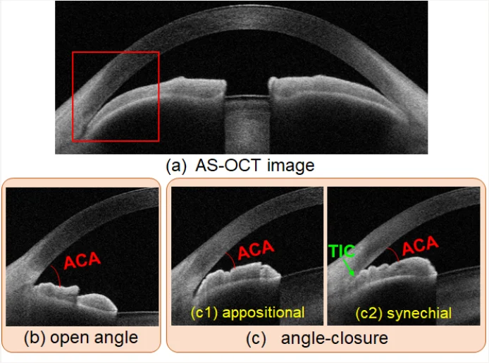
Precise characterization and analysis of anterior chamber angle (ACA) are of great importance in facilitating clinical examination and diagnosis of angle-closure disease. We explore several potential ways for grading ACAs into open-, appositional- and synechial angles by Anterior Segment Optical Coherence Tomography (AS-OCT), rather than the conventional gonioscopic examination and automated binary classification.
-
Huaying Hao, Yitian Zhao, Qifeng Yan, Risa Higashita, Kiong Zhang, Yifan Zhao, Yanwu Xu, Fei Li, Xiulan Zhang, Jiang Liu, Angle-closure Assessment in Anterior Segment OCT Images via Deep Learning， Medical Image Analysis, accepted, 2020.
-
Jinkui Hao, Huazhu Fu, Yanwu Xu, Yan Hu, Fei Li, Xiulan Zhang, Jiang Liu, Yitian Zhao, Reconstruction and Quantification of 3D Iris Surface for Angle-Closure Glaucoma Detection in Anterior Segment OCT, Proceeding of MICCAI, 2020, pp. 704-714. [PDF][Code]
-
Huaying Hao, Huazhu Fu, Yanwu Xu, Jianlong Yang, Fei Li, Xiulan Zhang, Jiang Liu, Yitian Zhao, Open-Narrow-Synechiae Anterior Chamber Angle Classification in AS-OCT Sequences, Proceeding of MICCAI, 2020, pp. 515-724.[PDF]